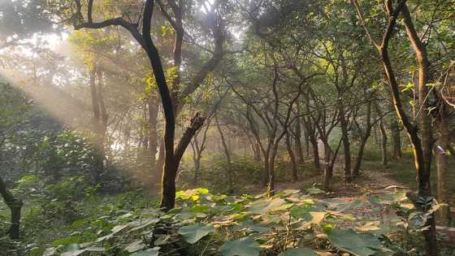
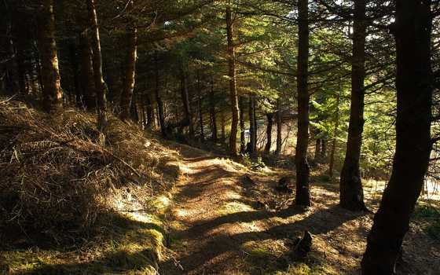
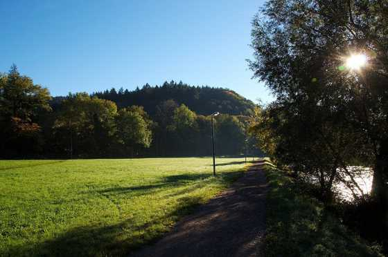
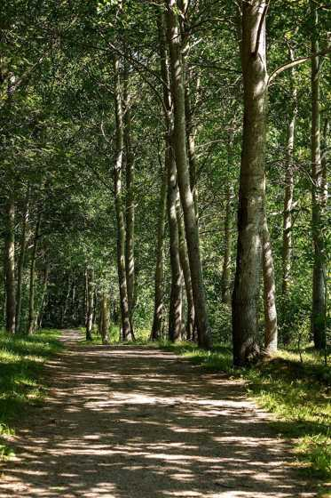
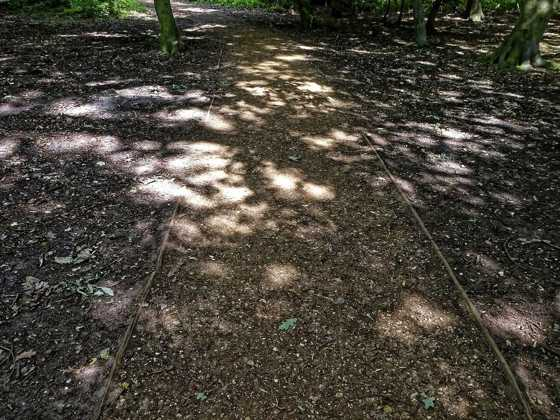
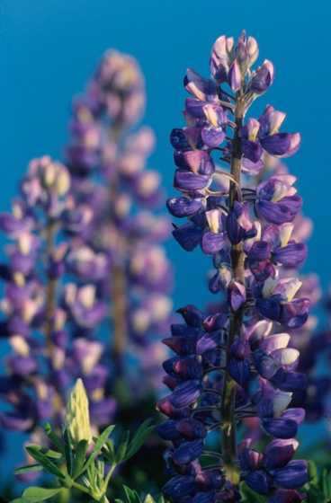
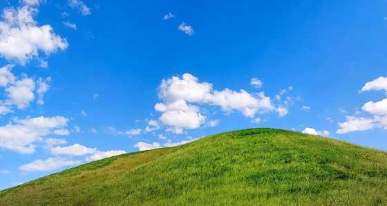
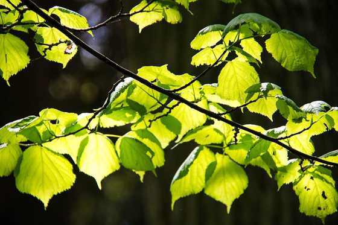

お店について
古民家をリノベーションした、おいしいご飯とカフェのお店です。
- 2026年4月に開店した、古民家をいかしたお店です(開店日はブログ等で4月18日・19日と記載が分かれています)。
- 店内には、手づくりのつるし雛、和箪笥、囲炉裏、鉄瓶などが飾られていると紹介されています。
- 黒い天井と柱が印象的な空間で、窓からの景色は新緑の季節がおすすめとのことです。
- ご飯は根来塗の器で。おばんざいは旬の野菜を使い、すし桶に小鉢を盛り付けたスタイルと紹介されています。
- 御岩神社の近く、自然豊かな場所にあります。駐車場はお店の脇に約11台分と紹介されています。
出典: 第三者のブログ記事・食べログ等の掲載情報です。お店の公式な発表ではありません。
店名の由来やお店づくりへの想いは、確認できていません。「こもれび」は木々の間から差す日の光を表す言葉で、このサイトの配色(黒い梁の色・根来塗の朱・新緑)は、紹介されている内装や景色から制作側が考えたイメージです。





口コミ
以下は、サイトのイメージをお伝えするための創作例です。実際のお客様の声ではありません。
イメージ例「小鉢がたくさん並んでいて、どれもやさしい味。ほっとして、つい長居してしまいました。」
イメージ例「古い梁や飾りを眺めながらいただくご飯は、いつもより時間がゆっくり流れる気がしました。」
イメージ例「緑の景色が窓から見えて、食後のコーヒーまで心地よく過ごせました。また季節を変えて行きたいです。」
アクセス
〒311-0402
茨城県日立市入四間町848-6
奥日立きららの里から御岩神社方面へ向かう道沿い(県道36号)と紹介されています。駐車場はお店の脇にあります(台数等はご確認ください)。
- 電話
- 準備中
- 営業時間
- 準備中

掲載写真はフリー素材のイメージであり、店舗の実際の様子ではありません。他地域で撮影されたものや撮影地が不明なものを含みます。
